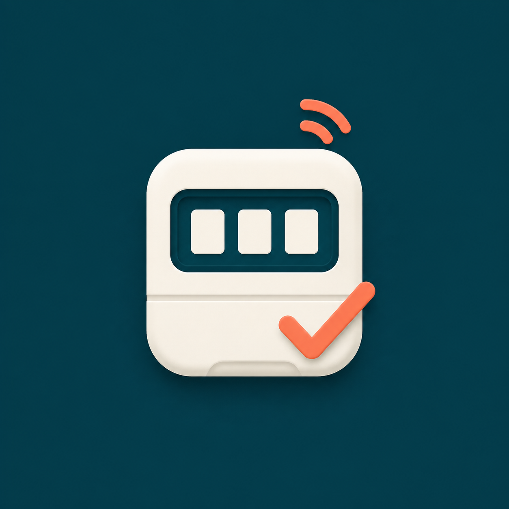
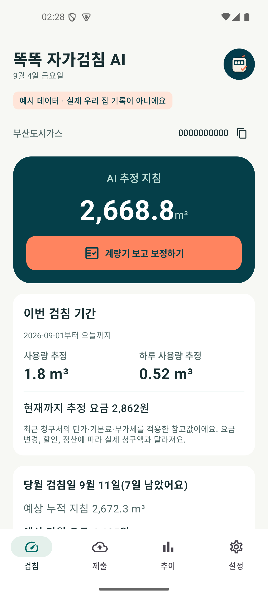
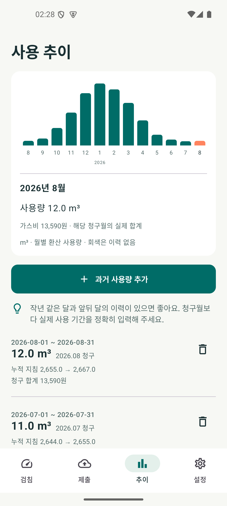

우리 집 기록 연결
지원 공급사에서 지난 청구 이력을 가져오거나 사용량을 직접 입력해요.

똑똑 자가검침 AI우리 집 가스를 챙기는 작은 자동화
계량기는 여유 있을 때 확인하세요.
검침 기간에는 똑똑이 제출을 챙길게요.
Android 8.0 이상 · 무료 테스트 참여
자동 제출은 부산도시가스에서 · 내 공급사 연결 방법
최근 실측을 반영해 가늠해요
자동 제출 조건을 확인했어요
작동 흐름을 설명하는 가상 예시입니다.
HOW IT WORKS
과거 사용량에 지금의 생활 패턴을 더합니다.
실제 계량기 숫자는 주 1회 정도 확인해 주세요.
지원 공급사에서 지난 청구 이력을 가져오거나 사용량을 직접 입력해요.
실제 숫자를 알려주면 최근 가스 사용 흐름에 맞춰 오늘의 지침을 추정해요.
보낼 숫자와 기간을 확인하고 제출해요. 부산도시가스는 마지막 날 자동 제출도 선택할 수 있어요.
20초로 보는 자동화
기록을 바탕으로 추정하고,
조건을 확인한 뒤 제출하는 흐름을 만나보세요.
가상 데이터로 제작한 설명 영상입니다.
실제 앱 화면이나 실제 제출 녹화가 아닙니다.
무음 · 한국어 설명 포함 · 부산도시가스 기준
앱 미리보기
오늘의 예상 지침부터 지난 사용 추이까지.
계정 없이 가상 데이터로 둘러볼 수도 있어요.
실제 앱에서 생성한 가상 데이터 화면입니다.
설치 버전에 따라 화면이 달라질 수 있습니다.


먼저 확인해 주세요
청구서에 적힌 도시가스 공급사 이름을 확인해 주세요.
공급사 계정으로 이력을 가져오고 검침값을 제출해요. 마지막 날 자동 제출도 선택할 수 있어요.
공급사 계정으로 청구 이력과 검침 기간을 확인하고, 숫자를 확인한 뒤 직접 제출해요.
휴대전화 본인인증으로 계약을 연결해요. 계량기의 소수점 앞 정수 지침을 확인해 제출해 주세요.
청구서의 사용량과 계량기 숫자를 기록해 추정과 알림으로 시작할 수 있어요.
검침값은 연결한 계약의 입력 기간에 제출할 수 있어요. 부산 외 공급사는 제출 화면에서 직접 진행해 주세요.
꾸준히 넓어지는 공급사 연결
기록과 자가검침을 한곳에서 관리하고, 연결할 수 있는 공급사는 계속 넓혀갑니다.
다음 앱 업데이트에는 가스앱·삼천리·에너지톡의 연결 개선을 담습니다.
휴대전화 인증 후 계약을 선택하면 월별 청구 내역을 기록 화면에서 볼 수 있어요.
계정으로 로그인해 계약과 청구 이력을 가져오고, 검침 기간에 숫자를 확인해 제출해요.
서비스 지역과 주소를 선택해 청구 내역을 가져와요. 검침 상태 확인부터 제출까지 앱에서 이어져요.
월별 청구 요약을 기록에서 확인하고, 처음 연결한 날에도 실제 계량기 숫자를 기록한 뒤 제출할 수 있어요.
사용량과 실측 기록은 기기에 암호화해 저장합니다. 외부 AI 서비스로 보내지 않으며, 공급사 연결과 제출은 앱에서 공급사로 직접 이루어집니다.
앱 개인정보 안내 ↗궁금한 점
실제 계량기 확인은 필요해요. 주 1회 정도 실제 숫자를 저장하면 추정에 반영됩니다. 숫자가 표시되지 않으면 계량기를 확인해 기록을 새로 추가해 주세요.
아니요. 기본값은 꺼짐입니다. 켠 뒤에도 검침 기간 마지막 날에 대상 여부, 기존 제출 상태, 이전 지침과 최근 실측 등 조건을 확인합니다. 결과는 제출 화면에서 확인할 수 있어요. 추가 확인 안내가 나오면 검침 상태를 새로고침해 주세요.
현재는 Android 8.0 이상에서만 사용할 수 있습니다. 이 페이지는 앱 소개용이며 웹에서 조회하거나 제출하는 기능은 제공하지 않습니다.
사진 인식이 아니라 기기 안에서 실행하는 적응형 추정 계산입니다. 과거 사용량과 최근에 직접 확인한 계량기 숫자로 현재 지침을 가늠해요. 별도 센서나 카메라 촬영이 필요하지 않습니다.
도시가스 공급사의 공식 앱이 아닌 개인 개발 앱입니다. 무료로 참여할 수 있으며, 도시가스 요금은 기존 납부 방법을 이용해 주세요.
ANDROID 비공개 테스트
무료 테스트에 참여하고, 우리 집에서 시작해 보세요.
그룹 가입과 테스트 참여는 별도 단계예요. 설치 화면이 보이지 않으면
두 곳의 Google 계정이 같은지 확인하고 잠시 후 다시 시도해 주세요.